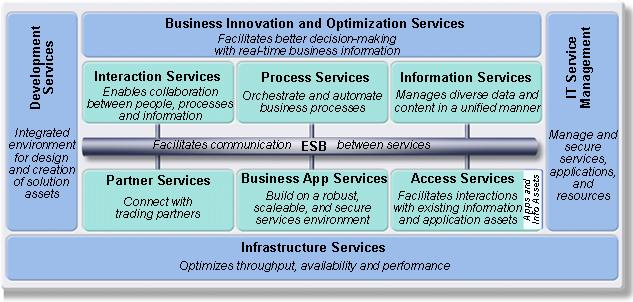

| Concept: IBM SOA Reference Architecture - Two Views |
 |
|
Relationships
| Related Elements |
|---|
Main Description
| IBM SOA Reference Architecture has two views: First, the Solution View; second, the Middleware View. Solution View of the
IBM SOA Reference Architecture is also called IBM SOA Solution Stack, S3. IBM SOA Solution Stack has nine logical layers in
total, five horizontal layers, and four vertical or cross cutting layers. Five horizontal layers of the IBM SOA Solution
Stack are Operational Systems layers, Component Layer, Services Layer, Business Process layer, and Consumer Layer. Four
vertical or cross-cutting layers are Integration layer, Quality of Service layer, Data Architecture layer, and Governance
layer. When you zoom in the Services layer you see the Middleware View of the IBM SOA Reference Architecture which has
Enterprise Service Bus in the middle and around it are different kinds of services like Process Services, Information
Services, Interaction Services, Access Services, Partner Services, Business App Services connecting to the Enterprise
Service Bus.

|

More Information
Method Management
| Content Lead | arsanjan@us.ibm.com |
|---|---|
| Change Date | Thu Mar 17 19:35:41 IST 2011 |
© Copyright IBM Corp. 1987, 2016 All Rights Reserved |